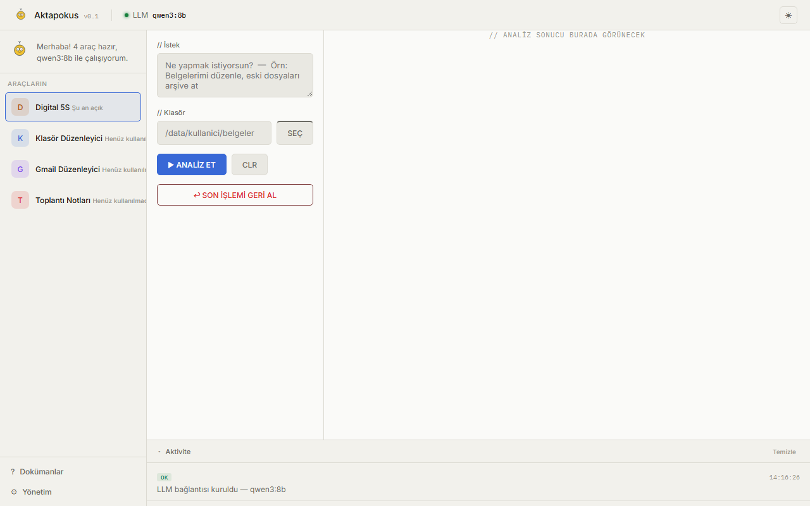
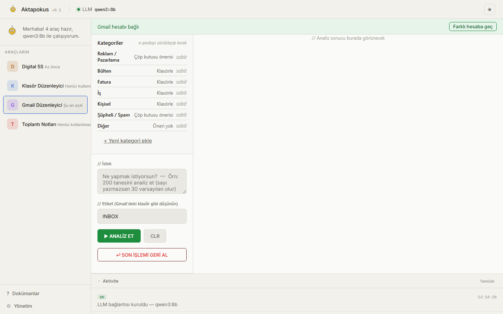

Aktapokus, tamamen yerel çalışan, modüler, yapay zekâ destekli bir dijital operasyon platformu. Dosyalarınızı düzenler, e-postanızı toplar, toplantı notlarınızı çıkarır — sizden onay almadan hiçbir şey yapmaz. Ve kapalı bir ürün değil: herkesin kendi aracını (Tool) yazıp platforma ekleyebildiği, topluluk tarafından büyütülmesi hedeflenen açık bir ekosistem.


Sistem internet olmadan çalışır. İnternet yalnızca uzaktan erişim, güncelleme ve isteğe bağlı bulut servisleri için kullanılır — hiçbir temel özellik buluta bağımlı değildir.
LLM sistem değildir — yalnızca niyetinizi anlar, bir plan üretir, uygun aracı seçer. Gerçek işlemleri (dosya taşıma, silme, e-posta arşivleme) yalnızca Tool katmanı yapar, LLM asla doğrudan müdahale edemez.
Her işlem aynı sırayı izler: Analiz → Plan → Öneri → Kullanıcı Onayı → İşlem → Doğrulama → Loglama → Geri Alma İmkânı → Öğrenme. Bu sıra değiştirilemez.
core.* altında yayınlanan hiçbir araç ücretli olamaz — istisnasız kural. Topluluk (community.*) araçları kendi lisans/fiyatını seçmekte serbest.
Aktapokus kapalı bir ürün değil, bir platform. Çekirdek bilinçli olarak küçük tutuluyor — her yeni yetenek, herkesin kendi reposunda yazıp ekleyebileceği bağımsız bir Tool olarak var oluyor. Hedef: topluluk tarafından geliştirilip büyütülen bir ekosistem.
Bir Tool yazmak için core'un kaynak koduna dokunmanız gerekmiyor — sabit bir paketleme sözleşmesi var: tool.json, web_analyze/web_execute/web_rollback fonksiyonları, kendi ui/panel.js'iniz. Kendi reposunda yaşar, kendi lisansınızı/fiyatınızı siz seçersiniz (community.*) — isterseniz zamanla Core Team consensus'uyla core.*'a absorbe edilip ücretsiz statüye geçebilir.
Admin panelinden tüm sistem için TEK bir varsayılan model seçersiniz (yerel Ollama ya da bulut — OpenAI, Gemini, OpenRouter üzerinden Claude). Bunun ötesinde, bir tool gerektiğinde farklı bir model isteyebilir — bu core/models.json içinde tanımlı bir registry üzerinden çalışır, varsayılanı DEĞİŞTİRMEZ. Bu ek modellerin API key'leri /settings sayfasından girilir — restart gerekmez, aynı oturumda hemen etkili olur.
Bir fikriniz var ama hangi teknik kararları vermeniz gerektiğini bilmiyorsunuz — konuşmacı ayrımı mı, vektör veritabanı mı, sunucu tarafında secret yönetimi mi lazım? Sokrates, hedefinizi Sokratik sorularla netleştirip kod yazan herhangi bir LLM'e (Claude, GPT, Gemini — fark etmez) verebileceğiniz eksiksiz, yapılandırılmış bir teknik spec/prompt hazırlar. Amaç: yazılım bilgisini demokratikleştirmek — bir fikri olan herkesin, deneyimli bir mimarın soracağı soruları alabilmesi.
Bağlanmak için (kurulum gerekmez, hosted):
Tool'ları yükleyip çalıştıran jenerik dispatcher. Docker, Ollama, admin paneli, dokümanlar. Önce bu kurulur — kurulum sırasında genel amaçlı bir LLM modeli (qwen3:8b, ~5GB) otomatik iner, bu yüzden ilk kurulum 5-20 dakika sürebilir (bağlantınıza göre).
5S metodolojisiyle kapsamlı dosya sistemi analizi ve organizasyonu. Skor kartı, kalıcı geçmiş, HTML rapor.
Daha basit, kural tabanlı klasör organizasyonu. Geçici dosya/duplicate temizliği için hafif bir alternatif.
Gmail hesabınızı OAuth ile bağlayıp e-postaları kategorize eder, arşivler. Kullandıkça öğrenen 3 katmanlı sınıflandırma.
Toplantı sesini kaydedip (canlı mikrofon ya da dosya) Türkçe transkript çıkarır; konuşmacı ayrımı hız için isteğe bağlı kapatılabilir. Rapor otomatik olarak Markdown, stilize HTML, PDF ve filtrelenebilir Excel (Aksiyon/Sorumlu/Termin) formatında üretilir — bulut model rate-limit'e takılırsa sessizce yerel modele düşer, uydurma içerik üretmez.
// Bu liste GitHub'daki genel repolardan anlık çekiliyor — yeni bir tool public olduğunda burada elle bir şey değiştirmeye gerek yok.
aktapokus-core'u klonlayıp setup.bat'ı çalıştırın — Docker, Ollama ve bağımlılıkları kurar, genel amaçlı bir LLM modelini (qwen3:8b, ~5GB) otomatik indirir. İlk kurulum bu yüzden 5-20 dakika sürebilir — bilgisayarınızı kapatmayın, tek seferliktir. Sonuç: hiçbir tool'u olmayan ama gerçekten çalışan bir core.
Sadece ihtiyacınız olan tool'u indirin — diskinizde başka hiçbir tool'un kodu bulunmaz.
Dosyaları core'un tools/<id>/ klasörüne kopyalar, container'ı otomatik yeniden başlatır. Elle dosya kopyalama ya da Docker komutu yok.
http://localhost:8000 — tool listesinde yeni aracınızı göreceksiniz.